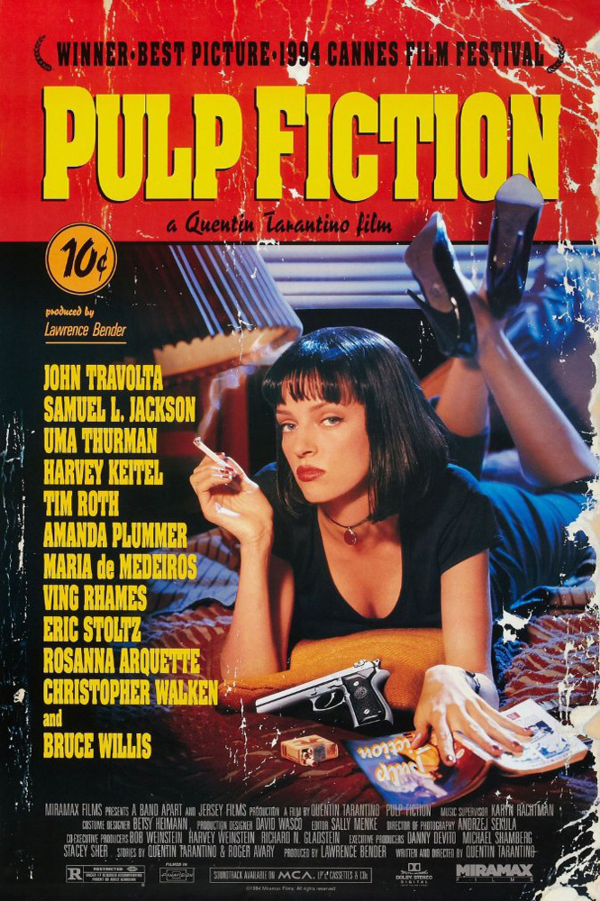
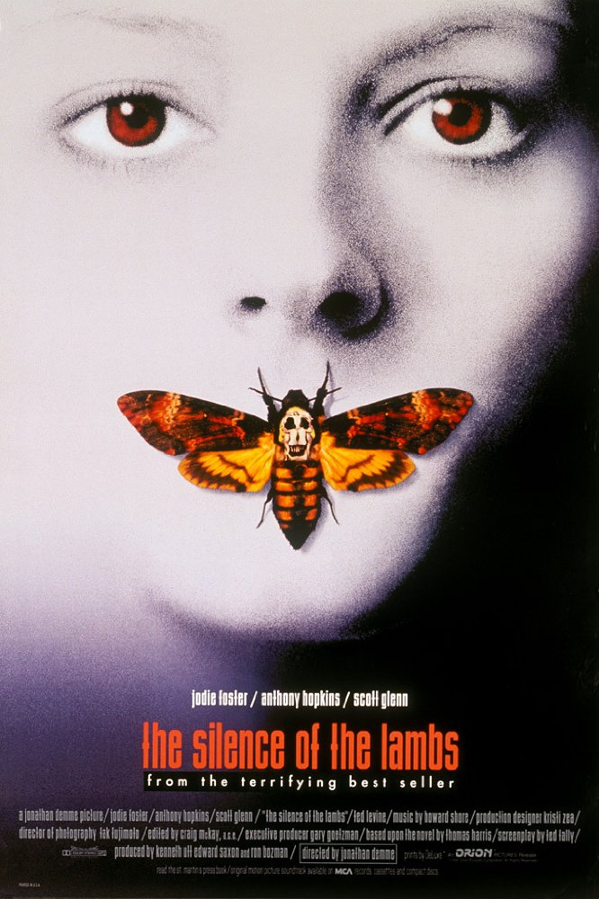
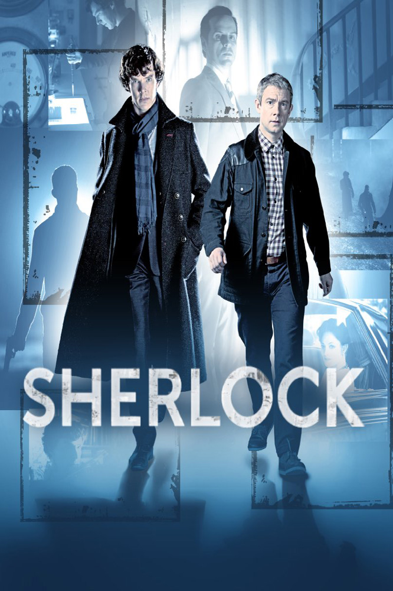
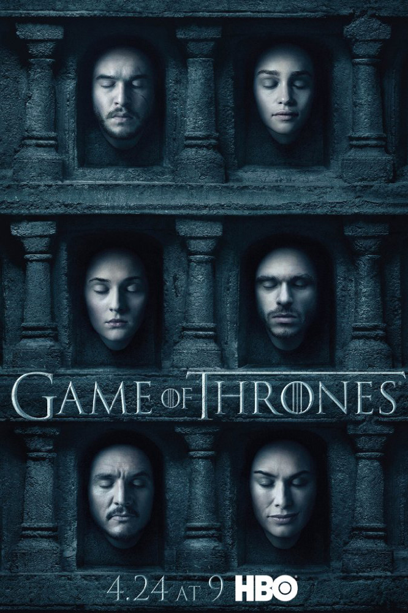

电影

低俗小说 Pulp Fiction
IMDb评分8.9
下载链接：
720p BrRip AAC x264 --868MB

沉默的羔羊 The Silence of the Lambs
IMDb评分8.9
下载链接：
720p BDrip X264 --752MB

搏击俱乐部 Fight Club
IMDb评分8.8
下载链接：
1080p BrRip x264 --1.85GB
连续剧

神探夏洛克 Sherlock
IMDb评分9.3
下载链接：
Season 1 720p BrRip x264 --2.05GB
绝命毒师 Breaking Bad
IMDb评分9.5
下载链接：
Season 1 Complete 720p.BRrip --2.71GB

权力的游戏 Game of Thrones
IMDb评分9.5
下载链接：
S01.720p.BluRay.x264 --4.35GB